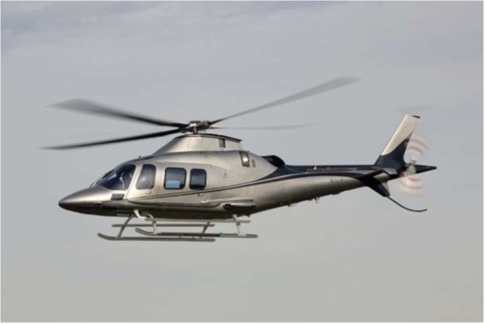

Copter Project
The main difference between aeroplanes and helicopters are the spinning blades that causes lift of the aircraft. They have main and rear rotors which allow them to rise without the need of a runway.They start rotating and require a certain angle of attack to start lifting up.
The system requires a voltage as input(offset) which will determine the angle of attack. The angle of attack will determine whether the helicopter hovers,lifts or lowers down.
The output of the system is the helicopter’s height and velocity.
Although as mentioned previously, only skilled people get to pilot a helicopter there is still the need for the helicopter to follow the setpoint that the pilot has desired it to be and without a contoroller this is impossible.
It will require constant concentration and readability of future events to maintain stability.
The disturbance that are come from the outside like wind, rain and weight need also to be rejected and controlled.
The designing of these controllers make them expensive because of how complicated the system is, it also requires expertise that have a lot of experience to minimise errors in design as it is a disaster-prone infrastructure.